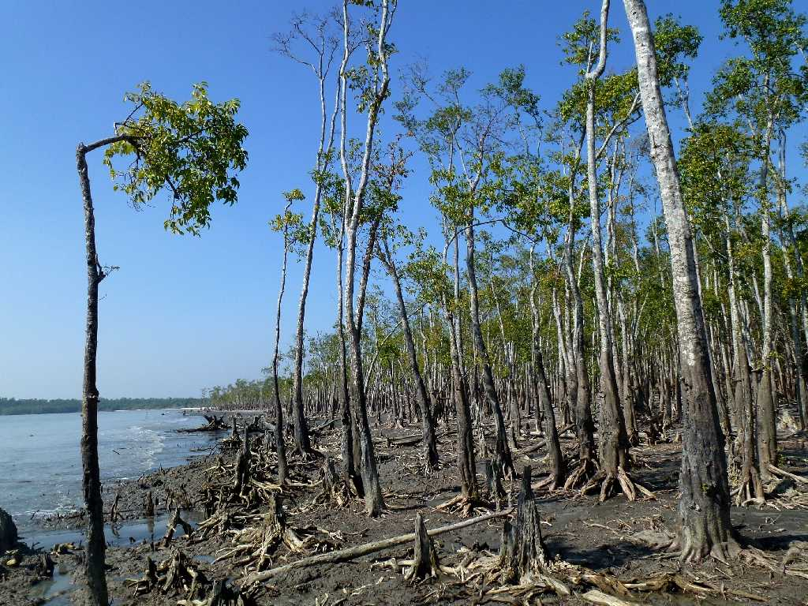
Jungle Walking Mangrove Forest Katka Sundarban National Park
シュンダルバン国立公園は東西２５０ｋｍ南北４０ｋｍ約１万平方キロメートルある世界最大のマングローブの原生林
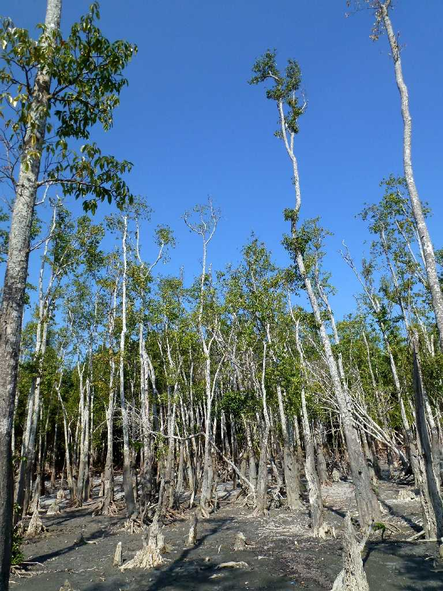
Jungle Walking Mangrove Forest Katka Sundarban National Park
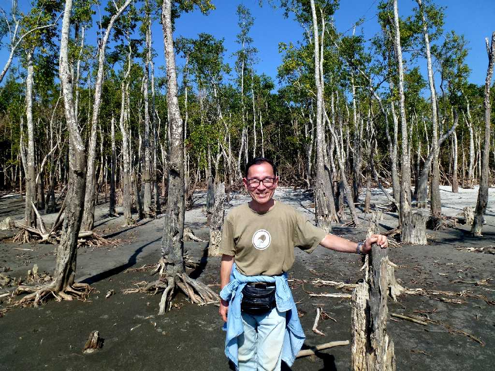
December 16 2013 Mangrove Forest Katka Sundarban National Park
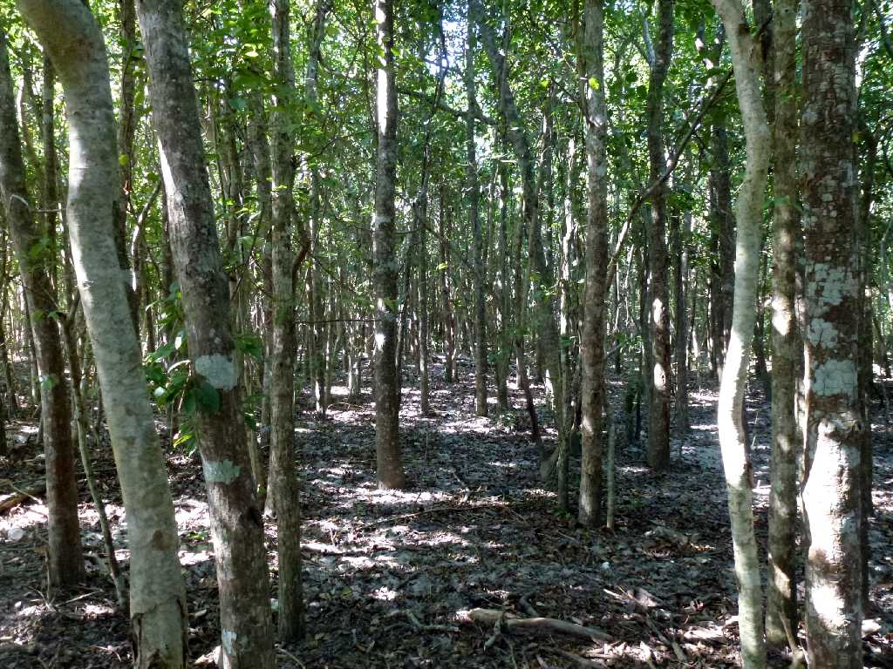
Jungle Walking Mangrove Forest Katka Sundarban National Park
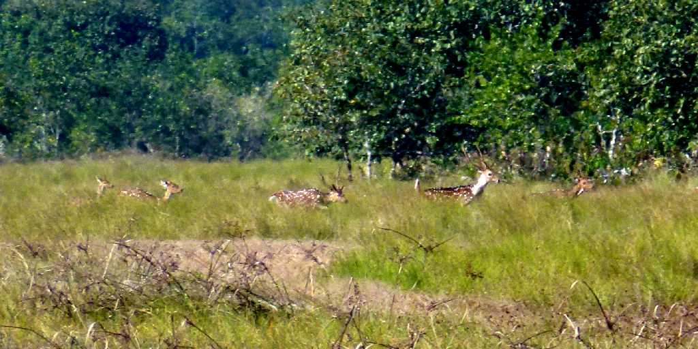
Deer Herd Mangrove Forest Katka Sundarban National Park
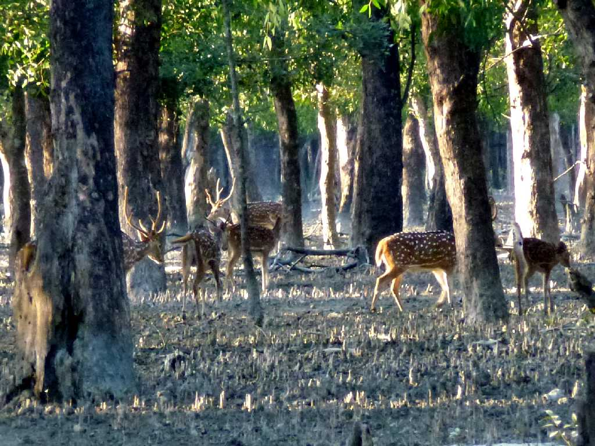
Deer Herd Mangrove Forest Katka Sundarban National Park
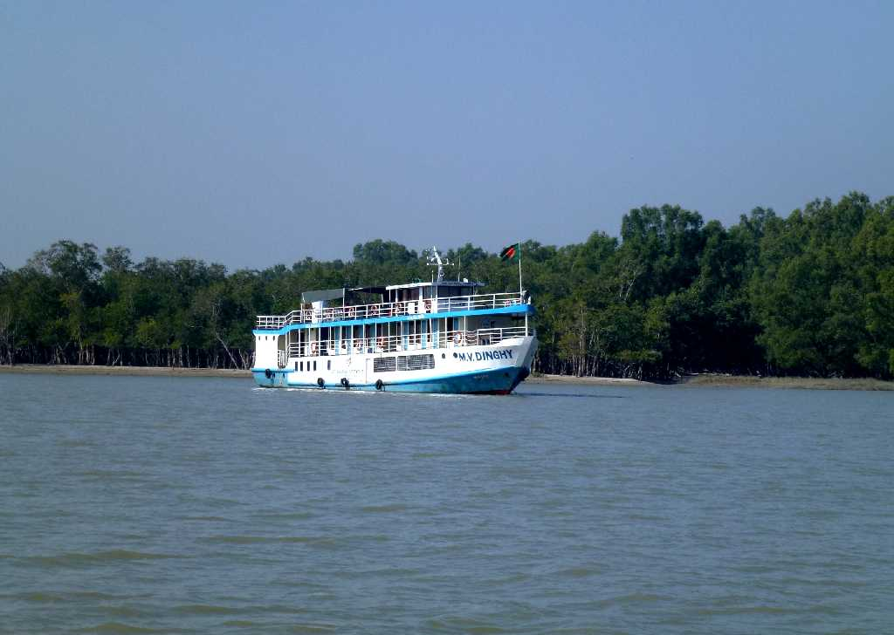
Cruise Mangrove Forest Katka Sundarban National Park
世界最大のマングローブの森を巡る４泊５日のクルーズ
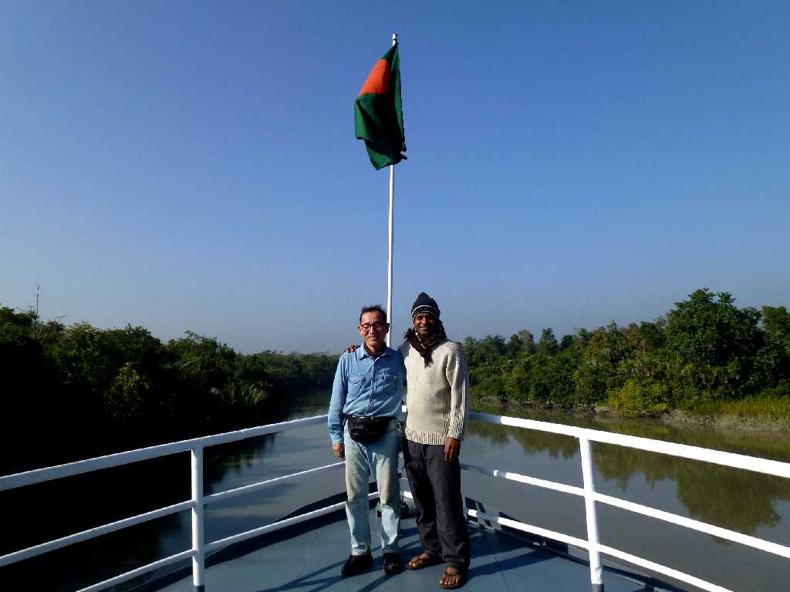
December 16 2013 Cruise Mangrove Forest Katka Sundarban National Park
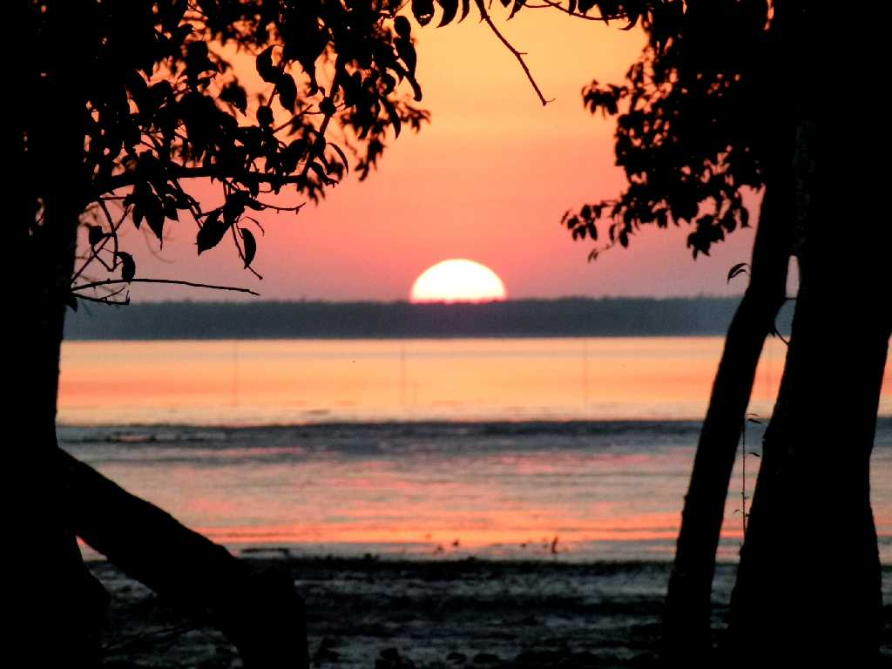
December 16 2013 17:18 Sunset Mangrove Forest Katka Sundarban National Park
マングローブの森からの美しい日の出と日の入
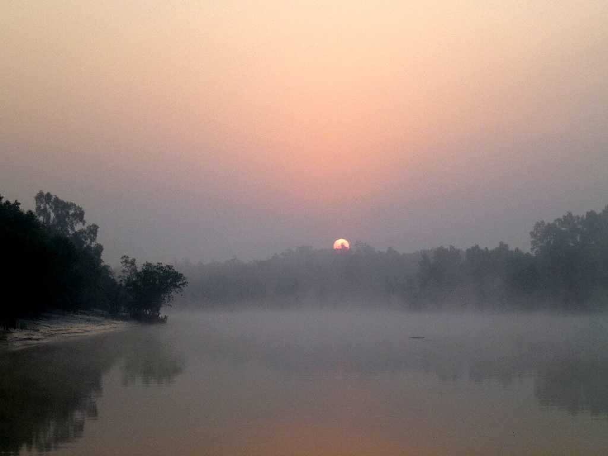
December 17 2013 6:47 Sunrise Mangrove Forest Katka Sundarban National Park
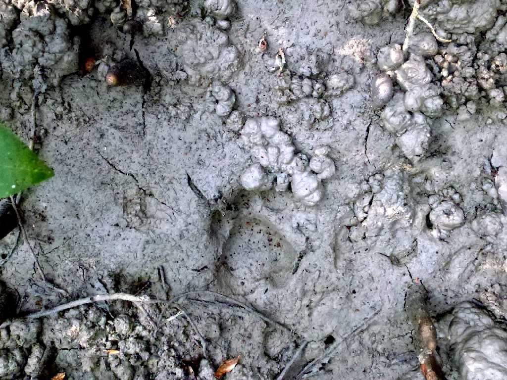
Footmark Bengal Tiger Mangrove Forest Katka Sundarban National Park
保護官が２０年間で７度しか見たことがないベンガルトラの１週間前の足跡
Bengal Tiger Sundarban 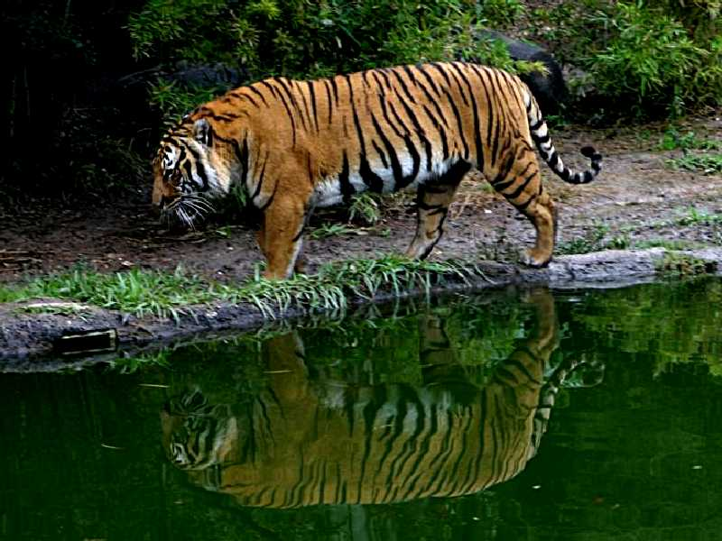 → Darjeeling Zoo
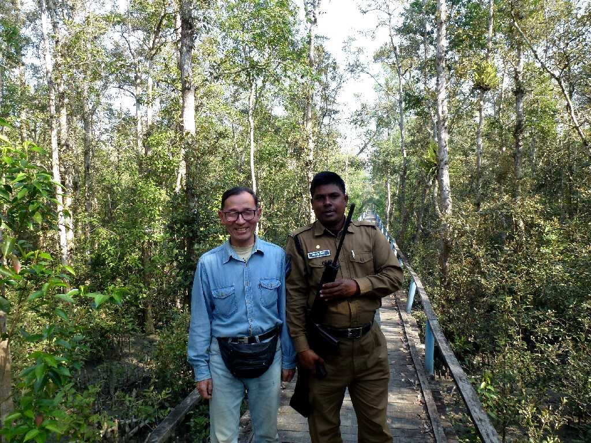
December 17 2013 Jungle Walking Mangrove Forest Katka Sundarban National Park